Full text is available as a scanned copy of the original print version.
Get a printable copy (PDF file) of the
complete article, or click on a page image below to browse page by page.
Links are also available for
Selected References.
Images in this article
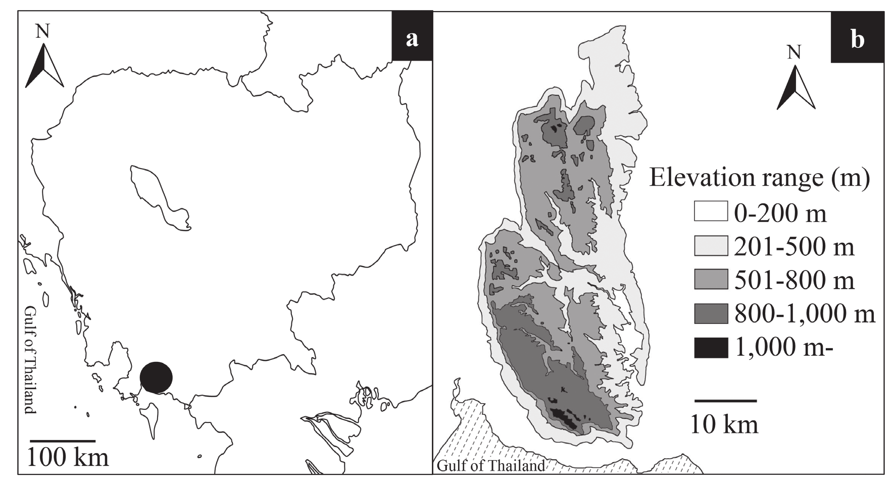
Fig. 1 Map of Bokor National Park. a, Locality of Bokor National Park in Cambodia; b, geography information on Bokor Pla- teau categorized by elevation range.
Fig. 2 Heteropanax bokorensis Tagane & Nagam. a, portion of branch; b, portion of inflorescence; c, flowering portion of umbel; d, staminate flower with petal removed. a–d, Tagane et al. 4311, KYO. Drawn by S. Tagane.
Fig. 3 Heteropanax bokorensis Tagane & Nagam. a, branch with inflorescence; b, branch with leaf; c, habit; d, lower surface of leaf; e, top branch; f, portion of inflorescence; g, flower.
Fig. 4 Schefflera cambodiana Tagane. a, portion of flowering branch; b, flower. a & b, Tagane et al. 6237, KYO. Drawn by S. Tagane.
Fig. 5 Schefflera cambodiana Tagane. a, branch with leaves; b, top branch; c, lower surface of leaf; d, inflorescence; e–f, flow- ers.
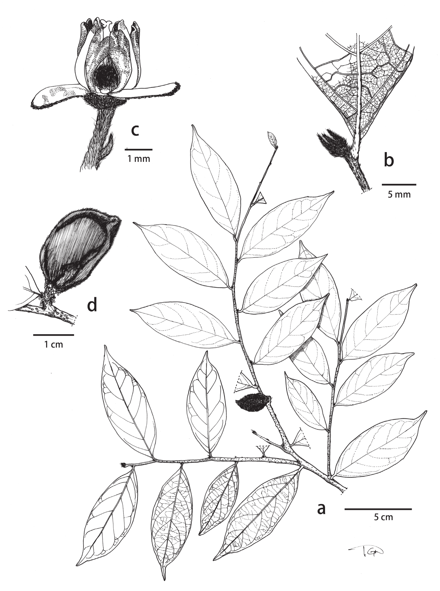
Fig. 6 Dichapetalum cambodianum Tagane & Nagam. a. fruiting branch; b, lower surface of leaf; c, staminate flower with one stamen removed; d, fruit. a–c, Tagane et al. 5506, KYO. Drawn by S. Tagane.
Fig. 7 Dichapetalum cambodianum Tagane & Nagam. a, fruiting branch; b, lower surface of leaf; c–e, staminate flowers; f, fruit.
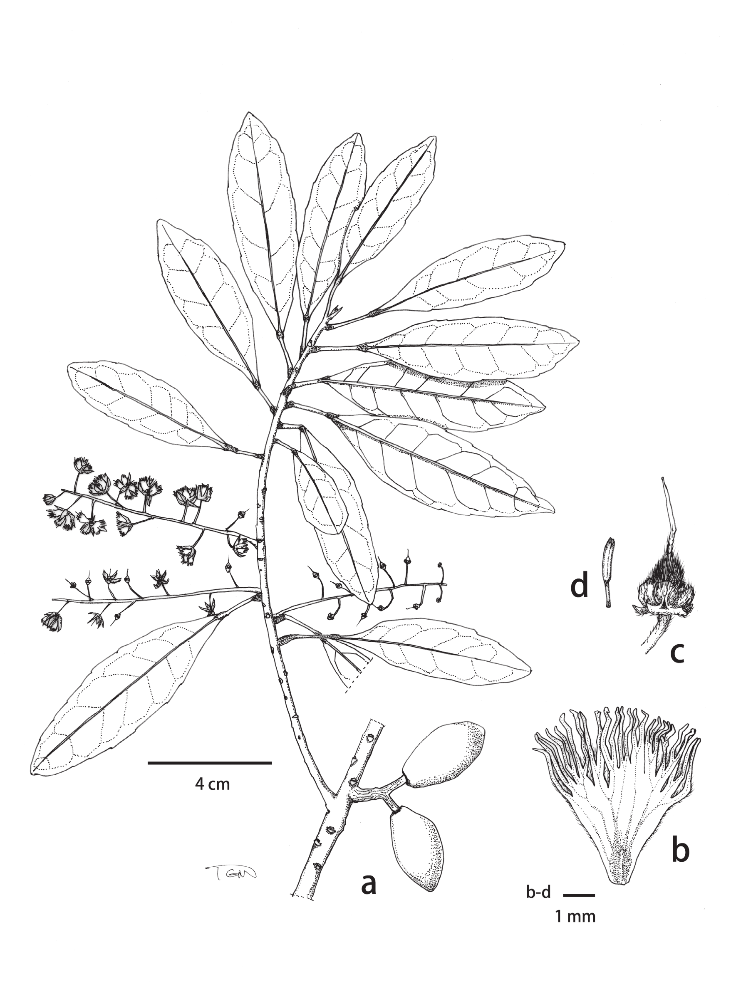
Fig. 8 Elaeocarpus bokorensis Tagane. a, flowering and fruiting branch; b, petal; c, flower with petals and anthers removed; d, anther. a–d, Tagane et al. 4300, KYO. Drawn by S. Tagane.
Fig. 9 Elaeocarpus bokorensis Tagane. a, flowering branch; b, lower surface of leaf; c, inflorescence; d–e, flower; f, fruit.
Fig. 10 Croton phourinii H. Toyama & Tagane. a, flowering branch; b, lower surface of leaf base showing basal glands; c, fruit; d, pistil flower; e, staminate flower. a–e, Toyama et al. 3197, KYO. Drawn by C. Mitsuyuki.
Fig. 11 Croton phourinii H. Toyama & Tagane. a, habit; b, flowering branch; c, lower surface of leaf; d, pistillate flower; e, fruit; f–g, staminate flower.
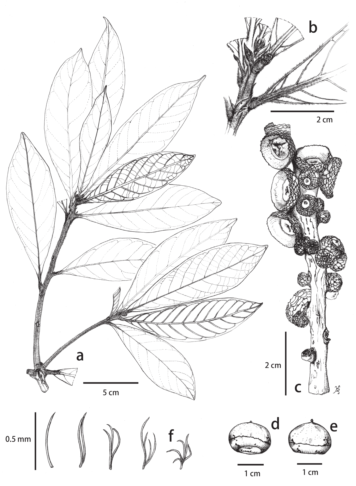
Fig. 12 Lithocarpus eriobotryifolius Yahara. a, branch; b, top branch with lower surface of leaf; c, infructescence; d-e, acorn; f, variation of stellate hairs. a–b, Yahara et al. 4411, KYO; c–f, Tagane & Chhang 5905, KYO. Drawn by K. Mase.
Fig. 13 Lithocarpus eriobotryifolius Yahara. a, branch; b, lower surface of leaf; c, top branch with stipule; d–e, infructescence; g, backside of acorn.
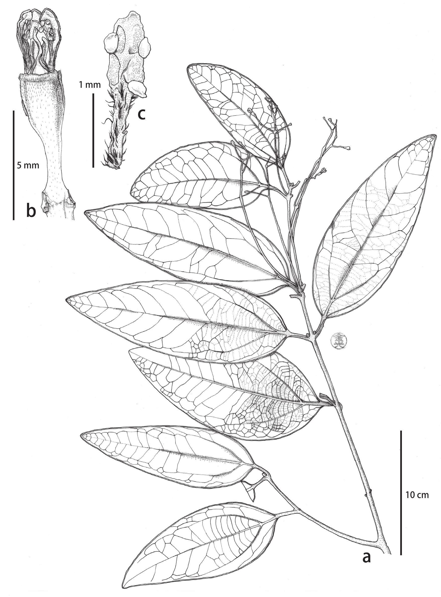
Fig. 14 Cinnamomum bokorense Tagane & Yahara. a, flowering branch; b, flower with petal removed; c, stamen from first whorl. a–c, Tagane et al. 3941, KYO. Drawn by H. Kanemitsu.
Fig. 15 Cinnamomum bokorense Tagane & Yahara. a, flowering branch; b, lower surface of leaf; c, inflorescence; d, flowers.
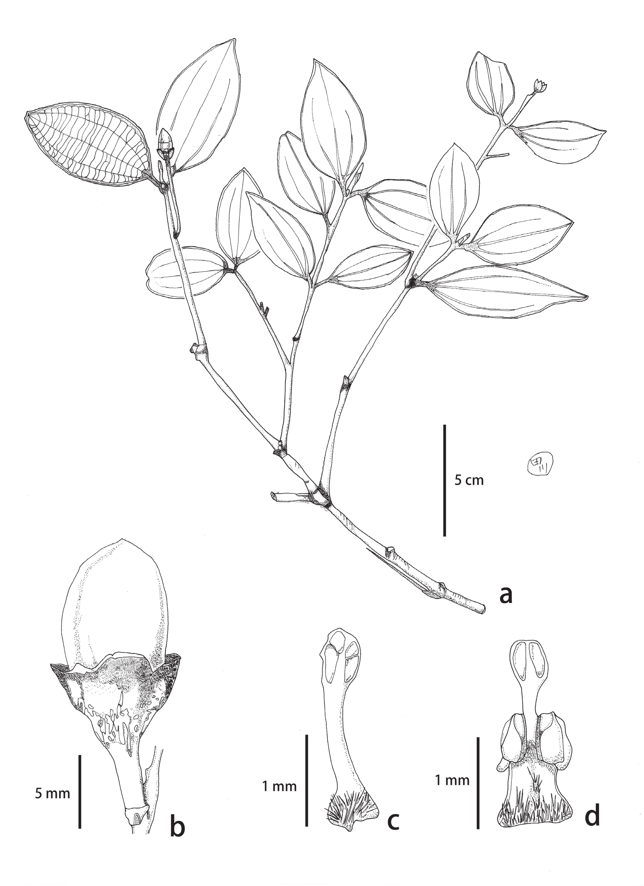
Fig. 16 Cinnamomum dimorphandrum Yahara & Tagane. a, habit; b. fruiting branch; c, stamen from first whorl; d, stamen from third whorl. a–d, Fuse et al. 6229, KYO. Drawn by K. Tagawa.
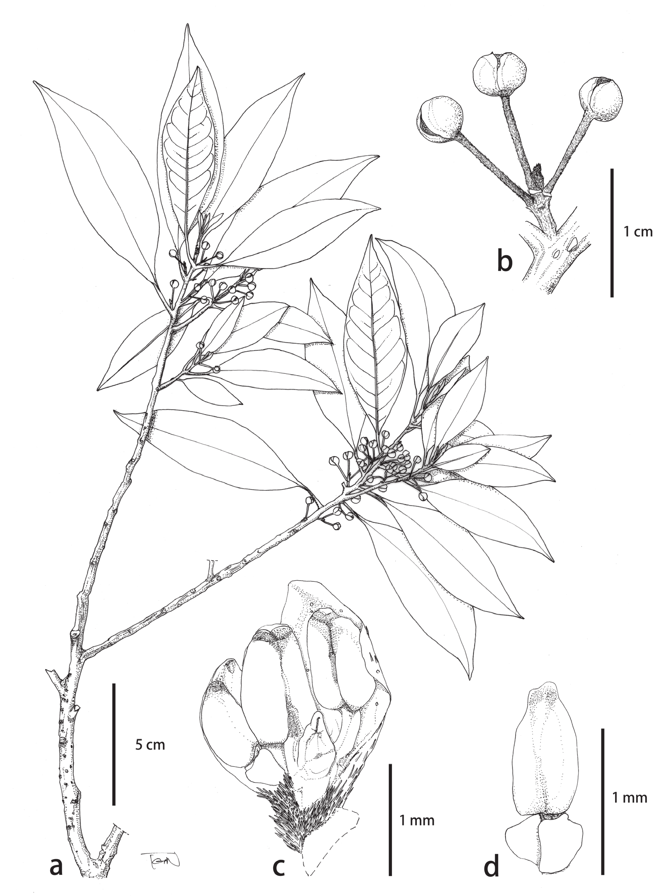
Fig. 17 Lindera bokorensis Tagane & Yahara. a, branch with flower bud; b, inflorescence; c, portion of flower; d, stamen from third whorl. a–d, Yahara et al. 4427, KYO. Drawn by S. Tagane.
Fig. 18 Cinnamomum dimorphandrum Yahara & Tagane (a–c) and Lindera bokorensis Tagane & Yahara (e–f). a, habit; b, lower surface of leaf; c, inflorescence; d, branch with flower buds; e, lower surface of leaf.
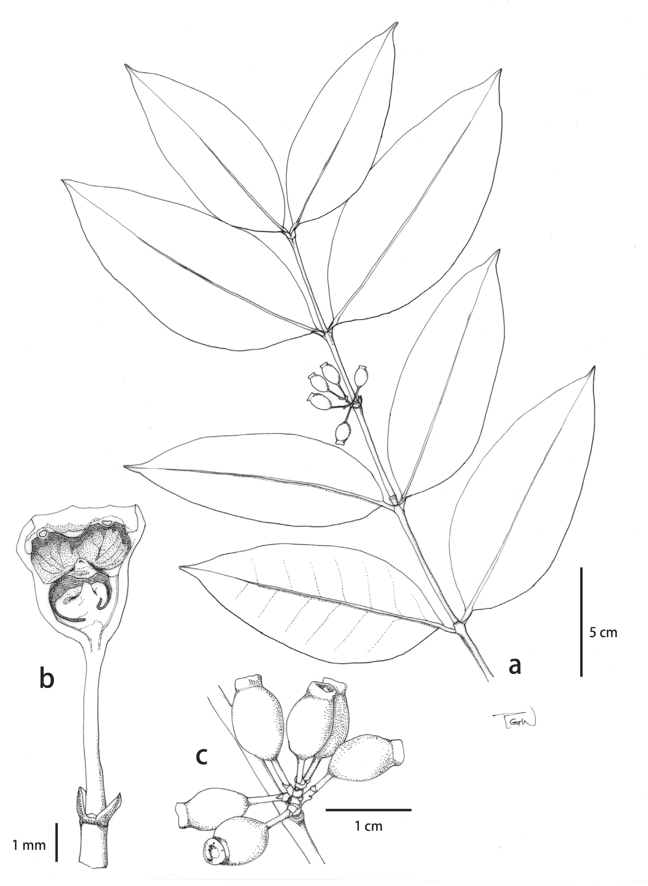
Fig. 19 Memecylon bokorensis Tagane. a, fruiting branch; b; flower dissection after petal dropped off; c, fruit. a–c, Tagane et al. 4065, KYO. Drawn by S. Tagane.
Fig. 20 Memecylon bokorensis Tagane. a, fruiting branch; b, portion of abaxial leaf surface; c, inflorescence after anthesis; d, infructescence.
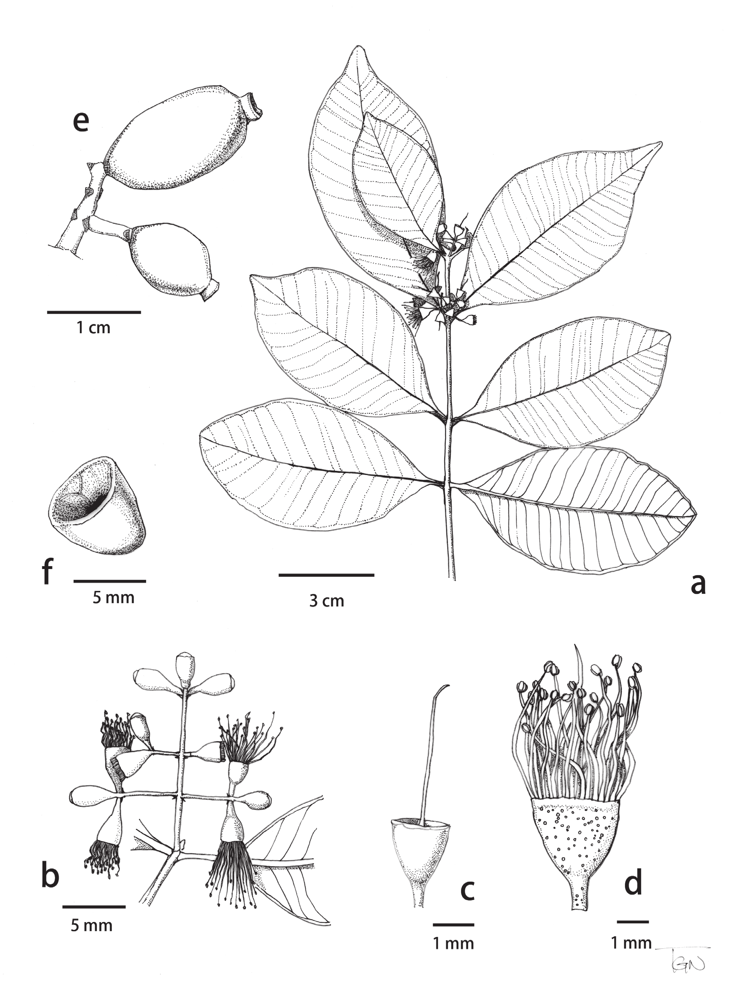
Fig. 21 Syzygium elephantinum Tagane. a, flowering branch; b, inflorescence; c, hypanthium cup with style; d, flower with petal removed; e, fruit; f, seed. a–d, Tagane et al. 4106, KYO; e–f, Tagane & Chhang 6210, KYO. Drawn by S. Tagane.
Fig. 22 Syzygium elephantinum Tagane. a, habit; b, flowering branch; c, lower surface of leaf; d, inflorescence; e, fruit.
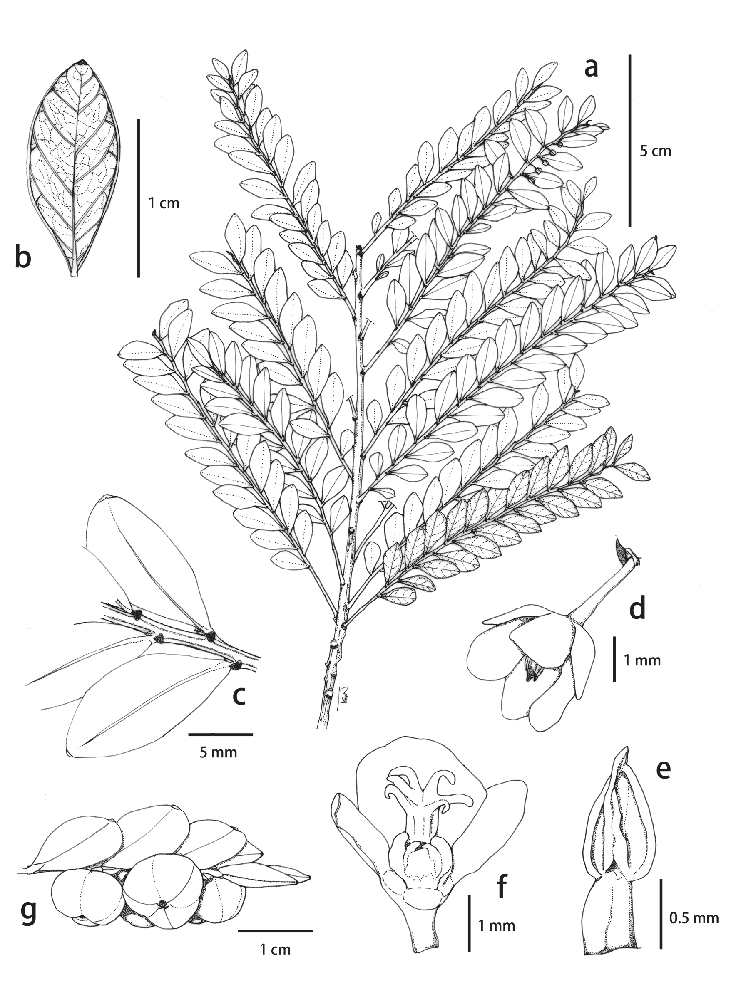
Fig. 23 Phyllanthus bokorensis Tagane. a, flowering branch; b, lower surface of leaf; c, portion of adaxial branch; d, staminate flower; e, stamen; f, pistillate flower; g, portion of fruiting branch. a-g, Tagane et al., 6336, KYO. Drawn by S. Tagane.
Fig. 24 Phyllanthus bokorensis Tagane. a, habit; b–c, staminate flower; d, pistillate flower; e fruiting branch; f, top branch.
Fig. 25 Ardisia smaragdinoides Yahara & Tagane. a, branch with inflorescence; b, portion of inflorescence; c, flower; d, fruit. a–b, Toyama et al 1694, KYO. Drawn by S. Yokota; c–d, Tagane et al. 6028, KYO. Drawn by S. Tagane.
Fig. 26 Ardisia smaragdinoides Yahara & Tagane (a–f) and Ardisia smaragdina Pit. (g). a, habitat; b, lower surface of leaf; c; flowering branch; d, fruit; e, inflorescence with white flower; f, inflorescence with pink flower; g, inflorescence.
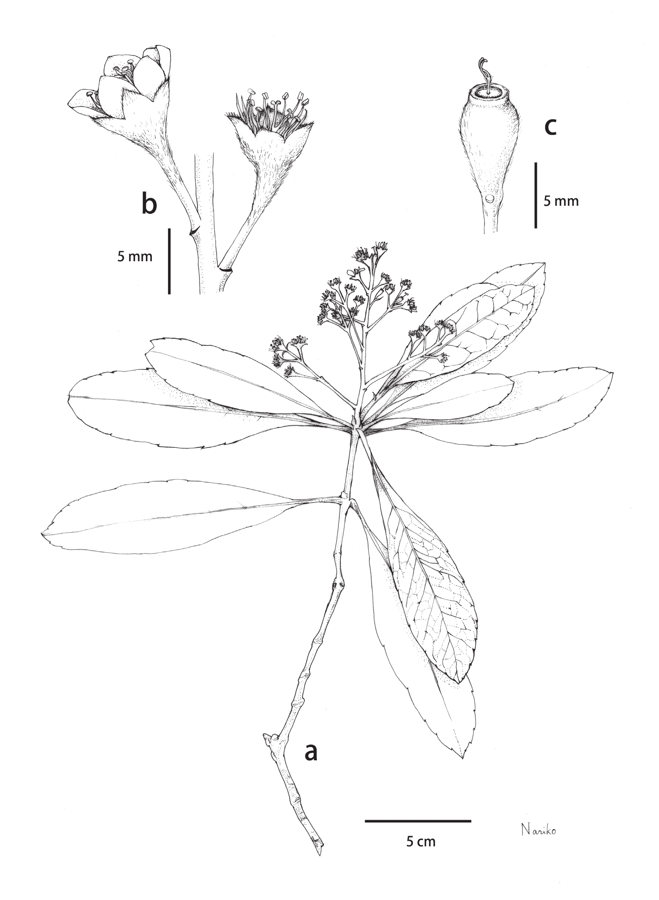
Fig. 27 Rhaphiolepis mekongensis (Cardot) Tagane & H. Toyama. a, Flowering branch; b, flowers; c, ovary with stigma. a–c, Tagane et al. 5483, KYO. Drawn by N. Toyama.
Fig. 28 Rhaphiolepis mekongensis (Cardot) Tagane & H. Toyama (a–c) and Rhaphiolepis indica (L.) Lindl (d). a, Flowering branch; b, flowers; c and d, lower surface of leaf.